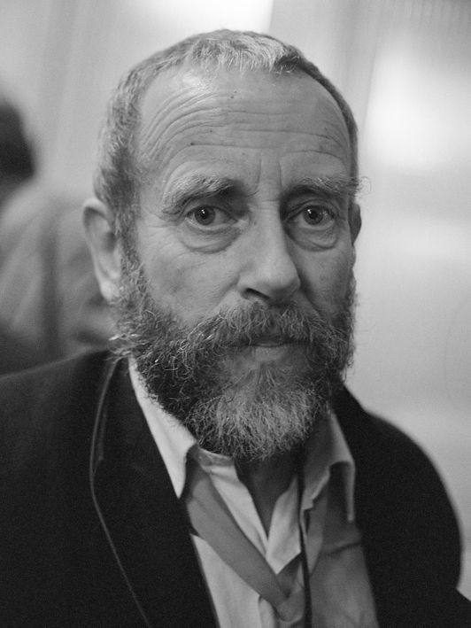

Tom Waits
Dam, Amsterdam, 1975
Photographer:
Ed van Elsken
Ed van der Elsken (1925, Amsterdam - 1990, Edam, The Netherlands), 'enfant terrible' of Dutch photography, was a photographer and filmmaker who expressed his meetings with people in photos, photo books and films for more than 40 years. He started to photograph at the end of the 1940s. In the 1950s he left Holland for Paris. There he encountered the bohemian society of Saint-Germain-de-Prés. Marked by the bitter post-war atmosphere these young people spent their days in bars, living on alcohol and drugs. At the suggestion of Edward Steichen, whom van der Elsken met in Paris, he turned his photographs into a photographic novel. 'Love on the Left Bank' instantly made him world famous.
bron: https://www.annetgelink.com/artists/7-ed-van-der-elsken/biography/